Screenshots
Both themes on a desktop browser and on an iPhone, in light and dark. Fixture data from a dev instance. Select any screenshot to enlarge it; use the arrow keys or swipe to move between them.
dt, page by page
Desktop at 1440 x 900 and iPhone. These follow the site theme; switch it in the bar at the top.

Inbox Agents grouped by who needs you. 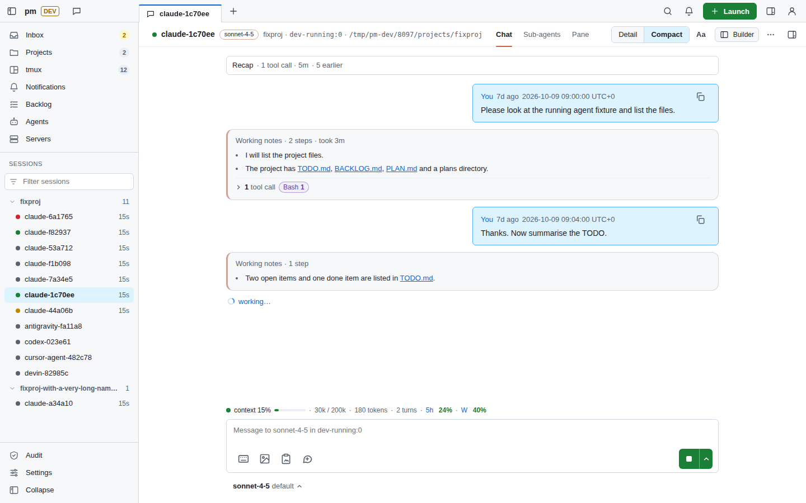
Agent chat Read and answer one agent. 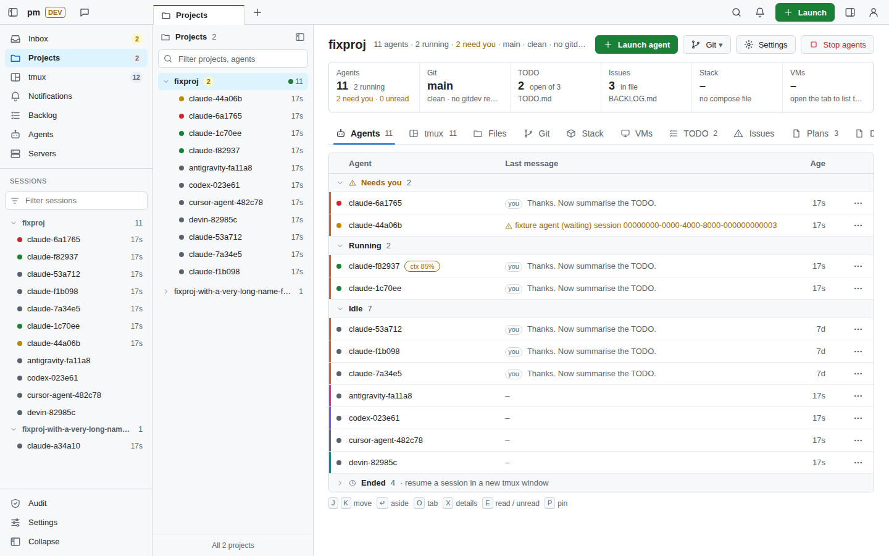
Project Agents, sessions, git and files of one folder. 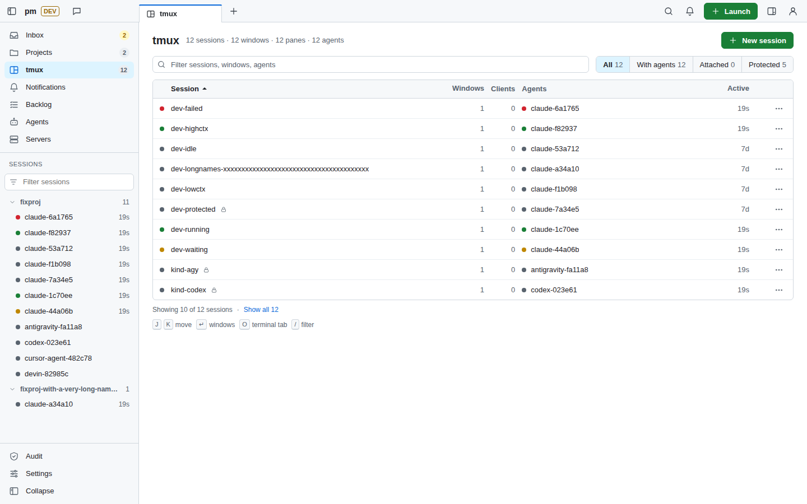
tmux Sessions, windows and panes. 
iPhone Inbox 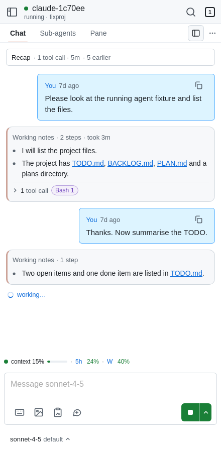
iPhone chat


dt
The newer, keyboard-driven shell: tabs, a sessions sidebar, command menus and layered panels.
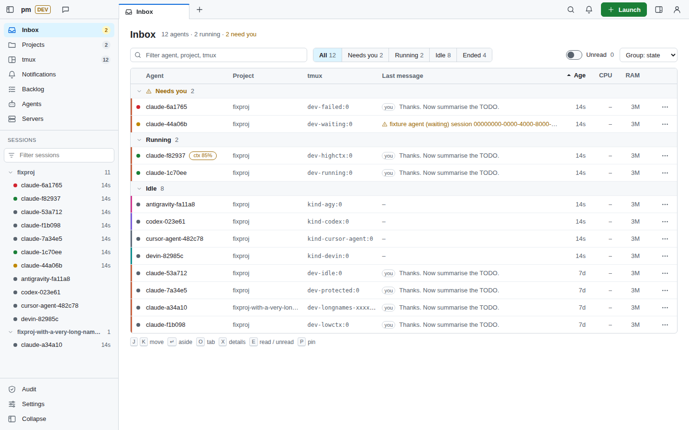
Enlarge screenshot: dt theme, desktop, light
assets/shots/dt-desktop-light.png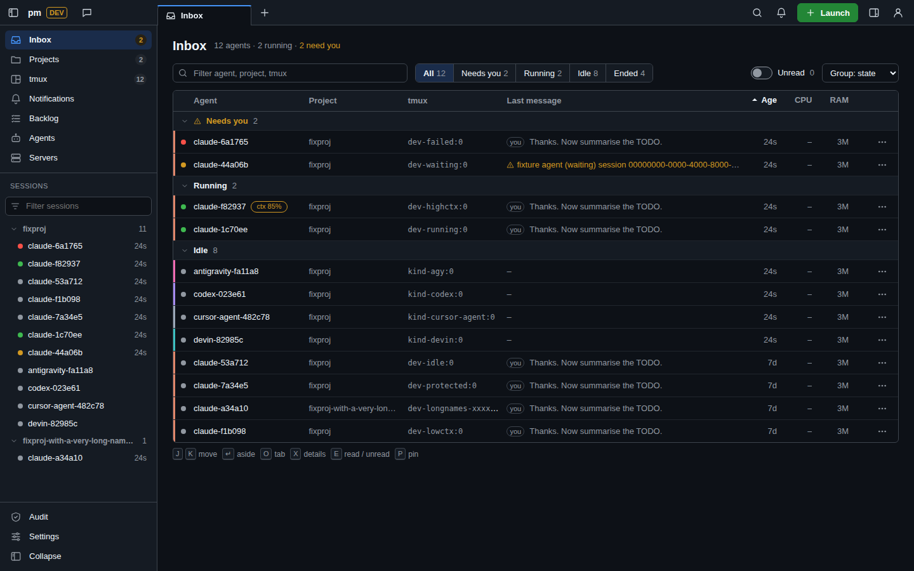
Enlarge screenshot: dt theme, desktop, dark
assets/shots/dt-desktop-dark.png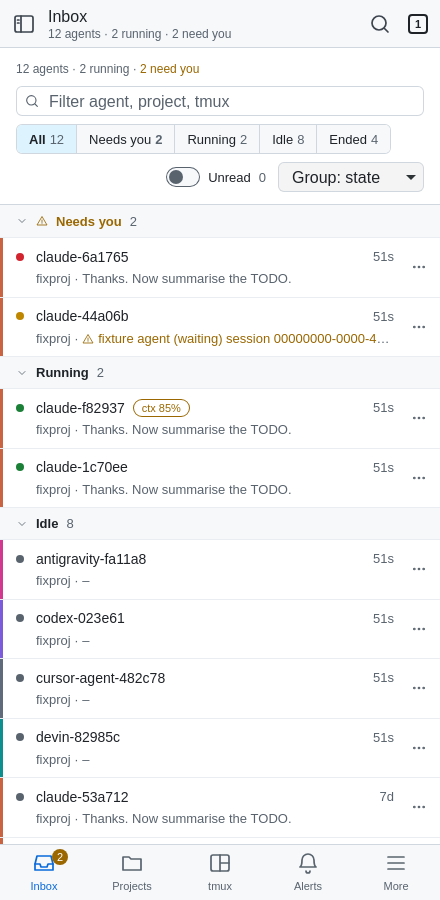
Enlarge screenshot: dt theme, iPhone, light
assets/shots/dt-iphone-light.png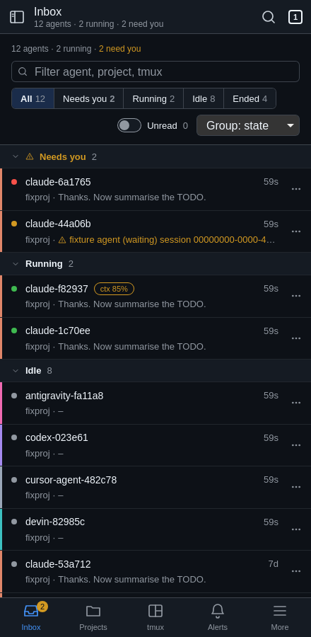
Enlarge screenshot: dt theme, iPhone, dark
assets/shots/dt-iphone-dark.pngclassic
The default theme: a sidebar layout with a phone tab bar.
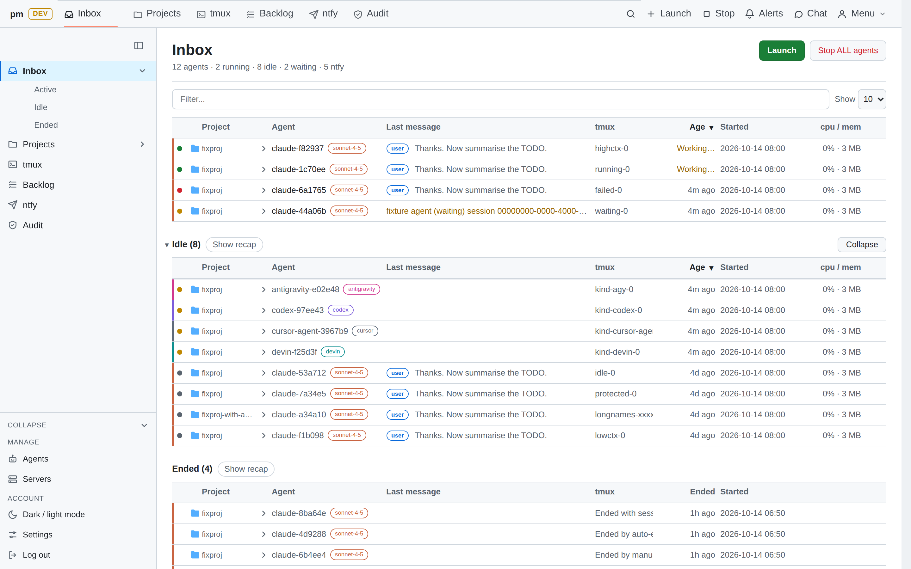
Enlarge screenshot: classic theme, desktop, light
assets/shots/classic-desktop-light.png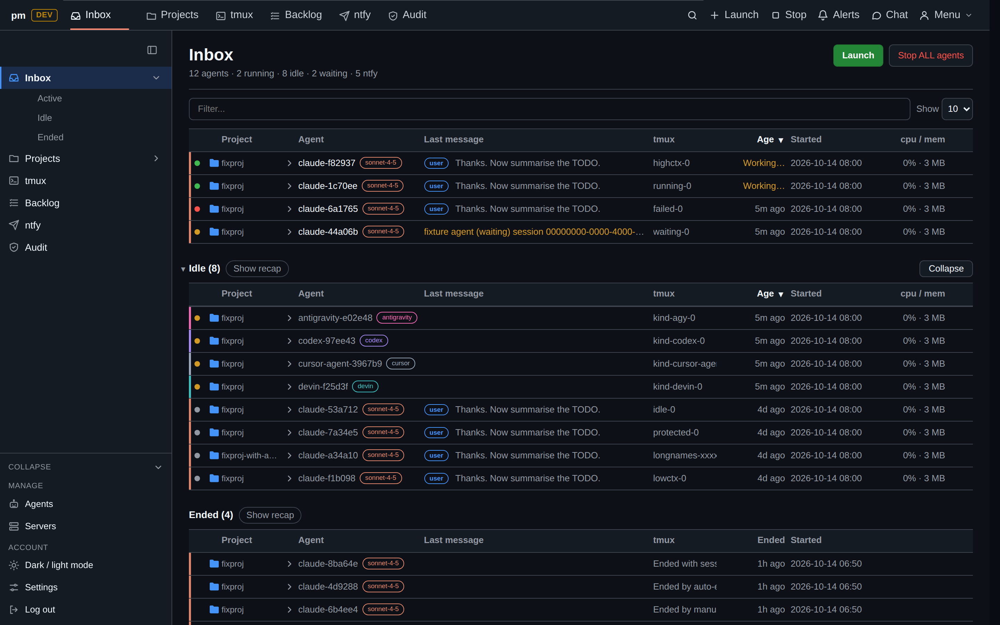
Enlarge screenshot: classic theme, desktop, dark
assets/shots/classic-desktop-dark.png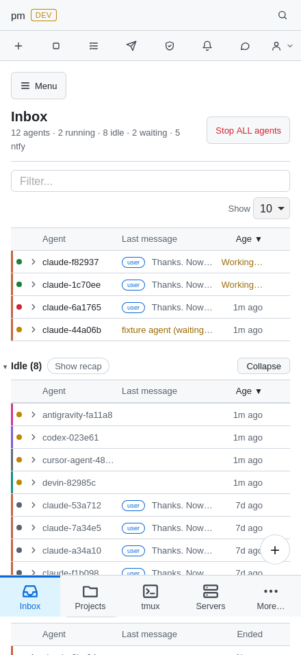
Enlarge screenshot: classic theme, iPhone, light
assets/shots/classic-iphone-light.png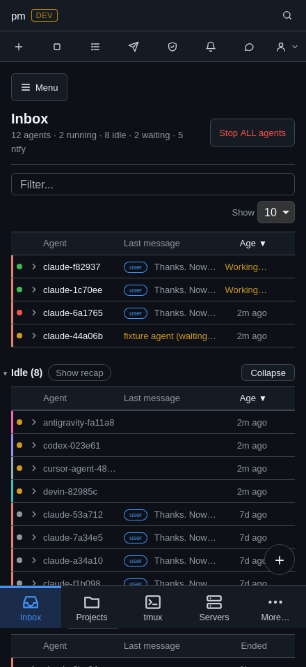
Enlarge screenshot: classic theme, iPhone, dark
assets/shots/classic-iphone-dark.png